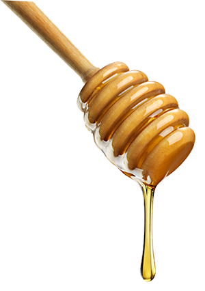

	<section class="col-sm-*">
			<p class="parr_nosotros"><span>Dadant Productores Apícolas S.A. </span>logró expandirse rápidamente en los últimos años, no sólo por la imagen de responsabilidad y profesionalismo de nuestros productos sino también gracias a nuestro <span>permanente compromiso de servicio y calidad.</span></p>
			<p class="parr_nosotros">Nuestra Planta, ubicada en las sierras de Tandil, corazón de la zona apícola de la Argentina, cuenta con los <span>equipos más modernos y avanzados de América Latina.</span> Esta situación única nos garantiza una adecuada trazabilidad de todos nuestros productos y nos coloca en una posición de privilegio para atender la creciente demanda de miel de todo el mundo.
			<span>Garantizamos un producto internacional de excelente calidad </span>fruto de la cuidadosa selección de la mejor miel y el cumplimiento de los procedimientos más exigentes a lo largo de todo el proceso, desde el momento mismo de la recolección hasta que el producto llega a los consumidores de la Argentina y del mundo entero.</p>
			<p class="parr_nosotros"><span>Nuestro objetivo comercial es ser una empresa de prestigio mundial. Nuestro lema es construir un sólido mercado interno y continuar siendo en el largo plazo un proveedor confiable en el mercado internacional.<span/></p>
	</section>
